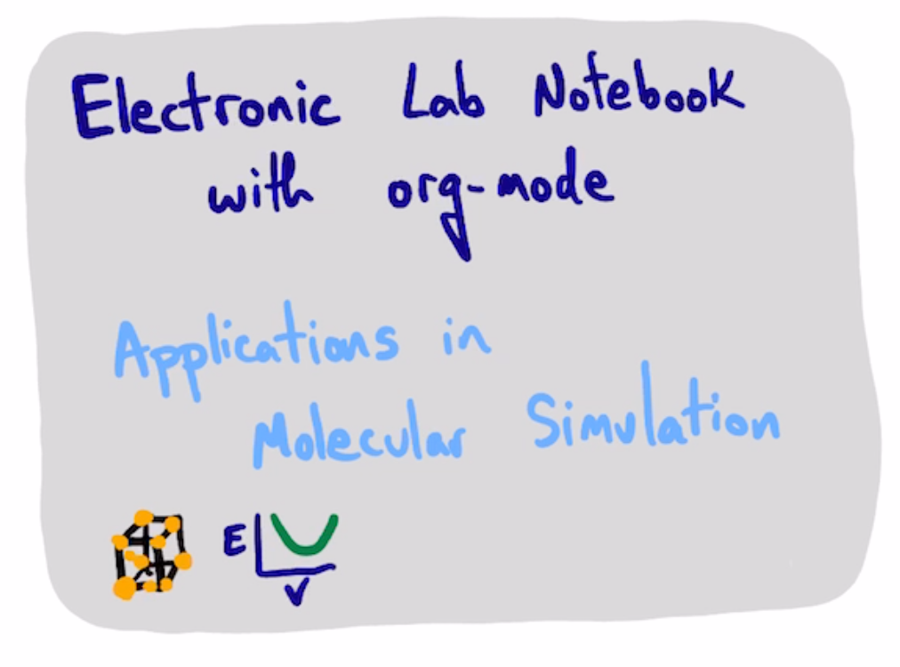

scimax-ELN for molecular simulation
Table of Contents

Goal: Use ase to compute the lattice constant of Cu.
from ase.build import bulk
from ase.calculators.emt import EMT
atoms = bulk('Cu', a=3.6)
atoms.calc = EMT()
atoms.get_potential_energy()
from pycse.hashcache import SqlCache SqlCache.dump(atoms=atoms)
- TODO extend SqlCache with custom serializing functions
- END
from pycse.hashcache import HashCache HashCache.dump(atoms=atoms)
HashCache.load('4130737e96a89b0d0315bd328303e298')['atoms'].get_potential_energy()
1. Work out how to run a bunch of volumes
@HashCache
def get_energy(symbol, a):
"""symbol is a string for a chemical element, for a metal EMT can use
a is a float lattice constant
"""
atoms = bulk(symbol, a=a)
atoms.calc = EMT()
return atoms, atoms.get_potential_energy()
get_energy('Cu', 3.6)
import numpy as np
A = np.linspace(3.5, 3.7, 10)
results = [get_energy('Cu', a) for a in A]
import matplotlib.pyplot as plt
volumes = [x[0].get_volume() for x in results]
energies = [x[1] for x in results]
plt.plot(volumes, energies, 'bo')
plt.xlabel('Volume')
plt.ylabel('energy (eV)')
from ase.eos import EquationOfState eos = EquationOfState(volumes, energies, eos='murnaghan') v0, e0, B = eos.fit() p = eos.plot();
HashCache.dump(p=p, energies=energies, volumes=volumes)
from pycse.hashcache import HashCache
import matplotlib.pyplot as plt
data = HashCache.load('3513cf5f94b19b0b7d8366977162b793')
data
import matplotlib.pyplot as plt fig = plt.figure() fig.axes.append(data['p']) fig.show()
dir(data['p'])
plt.plot(data['volumes'], data['energies']);

2. automating the pipeline
from pycse.hashcache import HashCache
from ase.build import bulk
from ase.calculators.emt import EMT
import numpy as np
@HashCache
def get_volumes_energies(symbol, n=10, lf=0.9, uf=1.1):
'''symbol: chemical element
n number of points in eos
lf, lower fraction
uf, upper fraction
'''
a0 = bulk(symbol)
v0 = a0.get_volume()
# V = 1/4 a**3
lc0 = (4 * v0)**(1/3)
A = np.linspace(lf * lc0, uf * lc0, n)
ATOMS = [bulk(symbol, a=a) for a in A]
for atoms in ATOMS:
atoms.calc = EMT()
volumes = [atoms.get_volume() for atoms in ATOMS]
energies = [atoms.get_potential_energy() for atoms in ATOMS]
return (volumes, energies)
V, E = get_volumes_energies('Cu')
from ase.eos import EquationOfState
eos0 = EquationOfState(*get_volumes_energies('Cu'))
eos0.fit()
eos1 = EquationOfState(*get_volumes_energies('Pd'))
eos1.fit()
eos2 = EquationOfState(*get_volumes_energies('Au'))
eos2.fit()
a0 = eos0.plot() eos1.plot(ax=a0) eos2.plot(ax=a0);
import matplotlib.pyplot as plt
for sym in ['Cu', 'Pd', 'Au']:
plt.plot(*get_volumes_energies(sym), label=sym)
plt.xlabel('V')
plt.ylabel('E')
plt.legend();
HashCache.dump(Cu=get_volumes_energies('Cu'),
Pd=get_volumes_energies('Pd'),
Au=get_volumes_energies('Au'))
data = HashCache.load('a1cb8cb213c239d6ca6a70bc3daf9e55')
from ase.eos import EquationOfState
table = []
syms = ['Cu', 'Pd', 'Au']
for sym in syms:
v, e = data[sym]
eos = EquationOfState(v, e)
V0, E0, _ = eos.fit()
table += [[sym, np.round(V0, 2), np.round(E0, 5)]]
table
from pycse.orgmode import Table
Table(table, headers=['symbol', 'V0', 'E0'],
caption='Equation of state data',
name='tab:eos')
| symbol | V0 | E0 |
|---|---|---|
| Cu | 11.56 | -0.00629 |
| Pd | 14.59 | -0.00065 |
| Au | 16.68 | -0.00088 |
| symbol | V0 | E0 |
|---|---|---|
| Cu | 11.56 | -0.00629 |
| Pd | 14.59 | -0.00065 |
| Au | 16.68 | -0.00088 |